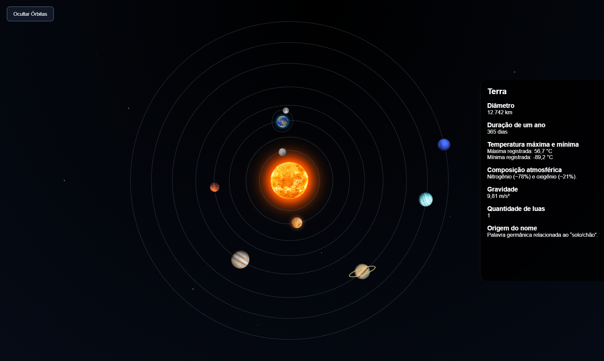
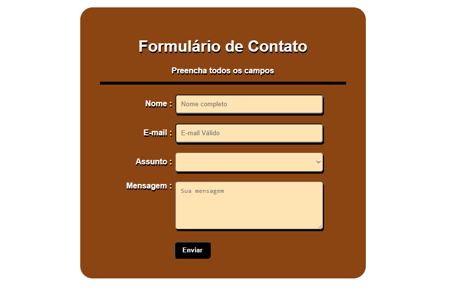

Gianlucca Souza Lauton
Full Stack Developer Student

Atualmente estou no primeiro semestre do curso de Desenvolvimento de Sistemas, onde venho construindo uma base sólida em programação, lógica computacional, desenvolvimento de software e fundamentos da tecnologia. Mesmo no início da minha trajetória, procuro evoluir constantemente através de estudos, prática e desenvolvimento de projetos pessoais voltados para a área de tecnologia.
Meu principal objetivo profissional é atuar como Desenvolvedor Full Stack,
participando da criação de soluções modernas, eficientes, escaláveis e que
gerem impacto real para usuários e empresas.
Tenho grande interesse em desenvolvimento web e de software, buscando sempre
aprender novas tecnologias, boas práticas de programação e formas de criar
experiências digitais mais intuitivas e funcionais.
Entre as habilidades que venho desenvolvendo estão HTML, CSS, JavaScript,
lógica de programação, versionamento com Git, bancos de dados e fundamentos
de frameworks modernos.
Além disso, também tenho interesse em design de interfaces e experiência
do usuário, procurando unir funcionalidade, performance e visual moderno
em cada projeto.
Sou uma pessoa dedicada, curiosa e focada em crescimento constante. Acredito que a tecnologia possui o poder de transformar ideias em soluções capazes de facilitar a vida das pessoas e gerar inovação. Por isso, mantenho uma visão clara sobre meu futuro na área de desenvolvimento, buscando continuar aprendendo, elaborando projetos cada vez mais completos e evoluindo profissionalmente como desenvolvedor.

Sistema Solar 2D responsivo e interativo com painel de informações.

Recriação de Landing page popular com foco em UI moderna e responsividade.

Melhoria de UI/UX de aplicativo popular, focando em interface moderna e intuitiva.

Formulário de contato para reclamações com design moderno.